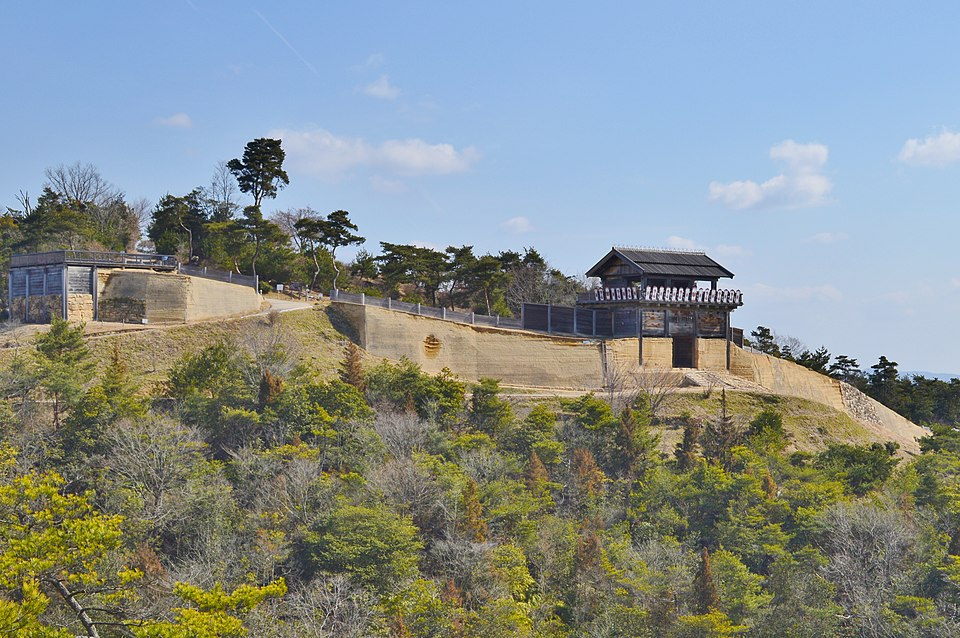
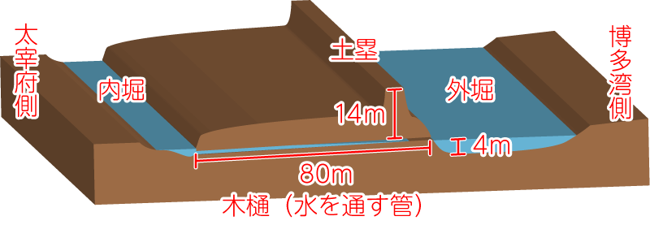

音声：NHKクリエイティブ・ライブラリー
※マナーモード時は音声が再生されません。
Translated by WILLIAM N. PORTER
English Audio:LibriVox
読み札
取り札
音声
Audio
天智天皇
秋の田の
かりほの庵の
苫をあらみ
我が衣手は
露にぬれつつ

わかころも
てはつゆに
ぬれつつ
あきの
- 1番歌
- 秋の田の
かりほの庵の
苫をあらみ
我が衣手は 露にぬれつつ
作者：天智天皇（626年-671年）
出典：後撰和歌集 秋
- 現代語訳
- 秋の田のほとりにある仮小屋は、屋根の苫の編み目が粗くて、私の袖は夜露に濡れているよ。
- 解説
- 当時、稲の刈り入れの時期になると、田んぼの近くに仮の小屋を建てて、害獣から稲を守るために夜通しで見張りをしていました。天皇がそのような小屋で夜通し過ごし、夜露に袖を濡らす姿は、なかなか想像しにくいものです。そこで、『万葉集』の詠み人知らずの歌が、庶民を思いやる天智天皇の歌として伝わったと考えられています。
- どんな人？
- 天智天皇は、大化の改新によって豪族中心の政治から天皇中心の政治へと変革を進め、中央集権体制の基盤を築いたことで、平安時代の礎を形成し、その功績から平安時代の人々に深く敬われました。平安京を開いた桓武天皇の直系の祖先にあたります。
- 品詞分解と文法
-
左の原文の単語をタップ（クリック）すると、品詞・活用・解説がここに表示されます。
- 天智天皇の心のチャート
-
歌人の心の内をチャートと現代の言葉で描いてみました。
稲穂が揺れる片隅で、
仮初めの小屋で番をする。きらびやかな宮中よりも、
この冷たい夜露こそが美しい。
- 歌のイメージ
-

この画像は、William N. Porter氏が1909年にイギリスで出版した百人一首の英訳本『A Hundred Verses from Old Japan』の挿絵を元にAdobe Firefly（生成AI）で色を付けて、アレンジしたイメージです。
- 天智天皇の系図
-

■の番号が付いている人物をクリックすると、その歌人のページに移動します。
天智天皇は持統天皇の父です。
天智天皇の死後、弘文天皇（大友 皇子）が即位しましたが、皇統をめぐり壬申の乱が勃発し、持統天皇の夫・天武 天皇（大海人皇子）が弘文天皇（大友皇子）を破りました。
- 付録
-
-
天智天皇の年表
（クリックで開閉します。）天智天皇誕生
蘇我石川麻呂の娘と結婚
この結婚は、乙巳の変で蘇我石川麻呂を味方につけるための政略結婚だと言われています。
乙巳の変
中臣鎌足らと蘇我入鹿を暗殺。蘇我蝦夷は自殺。軽皇子が孝徳天皇として即位。
孝徳天皇は、日本で最初の年号「大化」が定め、都を飛鳥から難波宮に遷都しました。
中大兄皇子（後の天智天皇）は皇太子にとどまりました。
蘇我石川麻呂は、右大臣という要職に就きました。難波長柄豊碕宮に遷都
孝徳天皇はそれまで政治の中心だった飛鳥から難波に都を移しました。
改新の詔
律令制の基本方針を表明し、中央集権国家を目指しました。
公地公民制・班田収授法などを実施しました。蘇我石川麻呂事件
蘇我石川麻呂は、彼の異母弟である蘇我日向の讒言により、中大兄皇子への謀反の疑いがかけられ自害に追い込まれました。
中大兄皇子が飛鳥に帰還
孝徳天皇の反対を押し切り、斉明天皇、中臣鎌足などの官人を率いて飛鳥に戻りました。一説には、豪族が私的に所有していた部民 や土地を天皇に献上する政策に対して、中大兄皇子が反発したと言われています。政治の実権は孝徳天皇から中大兄皇子側に移りました。
孝徳天皇が崩御
斉明天皇が即位
皇極天皇が重祚し、斉明天皇として天皇に即位しました。
有間皇子が刑死
蘇我赤兄がそそのかしたことで、有間皇子は謀反の疑いをかけられ、処刑されました。これにより中大兄皇子は皇位継承が確実になりました。
白村江の戦いで大敗
日本は唐と新羅の連合軍に大敗しました。
対馬、壱岐、筑紫に防人を派遣し、烽火を設置
唐や新羅からの侵攻に備え、国防を強化しました。
近江大津京（滋賀県大津市）に遷都
天智天皇として即位
近江令の制定
日本初の体系化された法律。刑法（律）は未整備で、行政法（令）のみ先行して制定されました。天智天皇が命じて、藤原鎌足が中心となって編纂したと言われています。現物は残っていませんが、律令国家の礎となった法典であると考えられています。
中臣鎌足が死去
亡くなる直前に藤原姓と大織冠という高貴な位を授けました。
庚午年籍を整備
日本で初めて全国的規模で戸籍が作られました。
班田収授の管理や徴兵に利用されました。
天智天皇が漏刻を作り、日本で初めて時報を開始
時報が始まった日として、現在6月10日は、時の記念日として知られています。
天智天皇が崩御
壬申の乱が勃発
天智天皇の死後、弟の大海人皇子（後の天武天皇）と息子の大友皇子（後の弘文天皇）が皇位継承をめぐって争い、大海人皇子側が勝利しました。
- 古代天皇の農耕祈願
-

出典：ColBase（https://colbase.nich.go.jp/）
古代の天皇は、初子の日 に農耕の神へ鋤 を供え、天下泰平と五穀豊穣を祈ったとされています。
こうした農耕を大切にする思いは、百人一首に収められた天智天皇の歌にも通じるものがあるのかもしれません。
正倉院には子日の儀式用の鋤が保存されており、写真はその鋤を模造したものです。
- 「秋の田の…」の原歌
- 「秋の田の…」の原歌は、『万葉集』に詠み人知らずの歌として収められています。天智天皇の歌ととても似ています。この『万葉集』の歌を元にして、いつの間にか庶民の生活や苦労を思いやる天智天皇の歌としてアレンジされたと考えられています。
原文
秋田刈る 仮廬を作り 我が居れば
衣手寒く 露ぞ置きにける 『万葉集』詠み人知らず現代語訳
秋の稲刈りのために仮小屋を作り
そこにいると、袖が寒々しく夜露までおりてきたよ。 - 和泉式部の本歌取り
- 次の歌は、和泉式部が天智天皇の歌を本歌取りしたものです。
見張りをするはずの小屋で眠れなくて困ると詠んでいます。原文
秋の田の 庵に葺ける 苫をあらみ
もりくる露の いやは寝らるる 『続後撰和歌集』和泉式部現代語訳
秋の田のほとりにある仮小屋は、屋根の苫の目が粗くて
滴り落ちてくる露でどうして眠れようか。 - 左京大夫顕輔の本歌取り
- 次の歌は、左京大夫顕輔が天智天皇の歌を本歌取りしたものです。
百人一首に選ばれた歌も、雲間から漏れ出る月の光を詠んでおり、
その静謐な情景に風雅を見出す奥ゆかしい感性が感じられます。
原文
秋の田に 庵さす賤の 苫をあらみ
月とともにや もり明すらん 『新古今和歌集』藤原顕輔現代語訳
秋の田のほとりに庵を作る農民は、粗末な屋根で苫の編み目が粗いので、射しこむ月の光と共に夜を明かすだろう。
- 天智天皇の妻・額田王と元夫・大海人皇子の贈答歌
- 次の歌は、天智天皇の妻・額田王の歌です。 彼女は、元は大海人皇子（天武天皇）の妻で、2人の間には娘までいましたが、天武天皇の兄である天智天皇に寵愛されたため、大海人皇子と別れて、天智天皇の妻になりました。この歌は、そんな彼女と元夫である大海人皇子の贈答歌です。歌の中にある「袖振る」という仕草は、当時は男女間における愛情表現でした。この贈答歌は、三角関係の中で人目を忍んでお互いに想い続けていた二人の切ない恋心を鮮やかに描き出しています。
- 額田王の歌
-
原文
あかねさす 紫野行き 標野行き
野守は見ずや 君が袖振る 『万葉集』額田王現代語訳
あかね色を帯びた紫草の野に行き、御料地を行くあなた。
野守が見てしまうのではないでしょうか。あなたが袖をお振りになるのを。 - 大海人皇子の返歌
-
原文
紫草の にほへる妹を 憎くあらば
人妻ゆゑに われ恋ひめやも 『万葉集』大海人皇子現代語訳
紫草のように美しいあなたを憎いと思ったなら、
人妻であるのに恋い慕うことがあるでしょうか。 - 乙巳の変と大化の改新
-

Gukei Sumiyoshi, Public domain, via Wikimedia Commons 飛鳥時代は聖徳太子の死後、蘇我氏が政治の実権を握っていました。その頃、海外では唐が朝鮮半島を侵略し、東アジアに緊張が高まりました。こうした情勢に危機感を抱いた中大兄皇子（天智天皇）は、中央集権化の必要性を感じ、中臣鎌足と共に645年に蘇我氏を倒す「乙巳の変」を起こし、「大化の改新」と呼ばれる政治改革が始まります。
乙巳の変の翌年、中大兄皇子（天智天皇）の叔父である軽皇子は孝徳天皇として即位しました。孝徳天皇は「改新の詔」を発布し、公地公民制を推進。豪族が私的に所有していた土地や人々は、国家の物となり、豪族の勢力を抑えました。しかし、この改革をめぐって、孝徳天皇と中大兄皇子（天智天皇）の間で意見の対立が起き、中大兄皇子（天智天皇）は孝徳天皇のいる難波の都を離れて飛鳥に戻ってしまい、改革の流れは一時的に停滞しました。
- 日本初の元号『大化』
- 大化の改新をきっかけに天皇中心の政治体制が確立され、その際に日本初の元号「大化」が定められました。明治時代以降は、天皇の即位ごとに元号が変わる一世一元の制（天皇の治世の間、一つの元号を使い続ける制度）になりましたが、それ以前は、天皇の即位以外にも、良い出来事や災害が起きた際にも元号が頻繁に変更されていました。
- 有間皇子の辞世の句
- 中大兄皇子（後の天智天皇）は、蘇我赤兄
にそそのかされて、謀反を企てた有間皇子を捕らえ、処刑するために現在の和歌山県へ連行させていました。その道中、自らの死を悟った有間皇子は、辞世の句を詠みました。中大兄皇子にとって、孝徳天皇の息子である有間皇子は有力な皇位継承者であったため、政略的に殺害されたと言われています。
原文
磐代の 浜松が枝を 引き結び
ま幸くあらば またかへり見む 『万葉集』有間皇子現代語訳
磐代の浜松の枝を結んでいきましょう。もし無事に命があれば、またここに帰って見てみよう。
※古代の人は、旅の安全を祈るとき、松の枝を引き結ぶという風習がありました。
- 藤原鎌足の歌
- この歌は、藤原鎌足（中臣鎌足）が天智天皇から安見児という名前の采女を下賜されたときに詠んだ歌だと考えられています。釆女は、容姿端麗な若い女性が選ばれ、多くの男性が憧れる存在でしたが、神や天皇に仕える女性とされており、天皇以外の男性が結婚することはありえなかったようです。これは、乙巳の変を共に成功させ、律令国家の礎を築いた鎌足は、天皇から非常に厚い信頼を得ていた証だと考えられます。事実、彼は死に間際に大織冠という高貴な位と「藤原」姓を賜っています。
原文
我れはもや 安見児得たり 皆人の
得難にすといふ 安見児得たり 『万葉集』藤原鎌足現代語訳
私はなんと安見児を得たのだ。
誰もが得難いという安見児を得たのだ。 - 白村江の戦い
-

663年に朝鮮半島の白村江で、唐・新羅の連合軍と百済再興を目指す日本軍との海戦が行われました。
660年に新羅に滅ぼされた百済では、遺臣・鬼室福信が百済再興のために戦っており、日本にいた百済の王子・余豊璋を新国王として百済に呼び戻し、日本からの援軍を要請しました。斉明天皇は出兵を決意しますが、出兵前に崩御。息子の中大兄皇子（天智天皇）が指揮を引継ぎ、朝鮮半島に出兵しました。
しかし、戦場となった白村江は潮の干満差が非常に大きく、日本軍は船の方向を変えることさえ困難だったと『日本書紀』に記されています。また、百済軍との連携がうまくいかず、倭軍（日本軍）は唐・新羅軍に撃退されました。
白村江で敗れた日本は「水城」と呼ばれる土塁や、西日本各地に山城 などの防衛体制を強化しました。
- 白村江の戦いに挑む心境を詠んだ歌
-
次の歌は、天智天皇が白村江の戦いのために出陣する船を見ながら詠まれました。
原文
わたつ海の 豊旗雲に 入日さし
今夜の月夜 さやけかりこそ 『万葉集』天智天皇現代語訳
海上にたなびく豊旗雲に夕日が射している。
今夜の月は清く澄んでほしい。次の歌は、白村江の戦いに向かう倭軍の船出の際、宮廷歌人である額田王が、当時の斉明天皇の気持ちを代弁して詠んだとされています。
原文
熟田津に 船乗りせむと 月待てば
潮もかなひぬ 今は漕ぎ出でな 『万葉集』額田王現代語訳
熟田津で船に乗りこもうと月を待っていたら、月が出ただけでなく、潮の流れもよくなってきた。今こそ漕ぎ出そう。
- 古代山城と水城
-
白村江の戦いで大敗を喫した日本は、唐・新羅からの侵攻に備え、国土の防衛体制を強化しました。
その一環として、古代山城と水城が築かれました。 - 山城
-

Saigen Jiro, CC0, via Wikimedia Commons 古代山城は水城と同時期に、朝鮮半島から伝わった技術を用いて、九州北部から瀬戸内沿岸、近畿にかけてなどの山頂に作られた朝鮮式の城が築かれました。 これらは、水城と連携して多重的な防衛網を形成する役割を担っていました。
写真は、7世紀後半に築城されたと考えられている岡山県総社市にある鬼ノ城。古代山城はすべて廃城となっていますが、鬼ノ城は城壁や西門などが復元されており、当時の姿を伺い知ることができます。
- 水城
-

水城は、朝鮮半島から伝わった技術を用いて、海からの侵略を想定し、大宰府 を防衛する目的で築かれました。現在も残る長さ約1.2km、高さ約14m、幅約80mの巨大な土塁は、味方の兵をたくさん待機できるようになっていました。発掘調査では、土塁の外側（博多側）に大きな堀が確認されており、当時は水を湛えていたと考えられ、敵の侵入を防ぐ目的であったと考えられます。
- 水城跡
-
福岡県の太宰府市、大野城市、春日市にまたがる水城跡。
この動画では、その広大な水城跡を空から眺めるようにご覧いただけます。 - 防人と烽火
-
663年の白村江の戦いで大敗した日本は、強大な唐や新羅からの侵攻に備える必要に迫られました。天智天皇は、対馬（長崎県）、壱岐（長崎県）、筑紫（福岡県）に防人を配置し、烽火を設置させました。
防人とは、大陸からの侵攻に備え、最前線となる九州に配置させられた兵士のことです。主に東国の農民が徴兵され、3年間任務にあたりました。遠い故郷を離れ、命を懸けて国境を守る彼らの姿は、後の『万葉集』にも悲痛な歌として残されています。
烽火とは、防人たちが運用した狼煙台 のことです。高い山に設置され、昼は煙、夜は火を焚くことで敵の襲来などの緊急事態を速やかに伝達しました。
- 防人の歌
-
次の歌は、防人の妻によって詠まれました。防人にとられる家族の悲痛な思いを伝えています。
原文
防人に 行くは誰が背と 問ふ人を
見るがともしさ 物思ひもせず 『万葉集』詠み人知らず現代語訳
次に防人に行くのは誰の夫でしょうと噂する人たちがうらやましい。あの人たちは夫を防人にとられていないから思い悩むことはないのでしょう。
次の歌は、妻を亡くした防人が子供を故郷に残して、赴任する防人によって詠まれました。
原文
韓衣 裾に取りつき 泣く子らを
置きてそ来ぬや 母なしにして 『万葉集』他田舎人大嶋現代語訳
私の韓衣の裾に取りついて泣く子供を置いてきてしまったよ。母がいない子供なのに。
- 庚午年籍
-
庚午年籍は、670年に天智天皇がつくらせた日本初の全国的な戸籍です。
663年の白村江の戦いで大敗した日本は、国力を高める必要に迫られました。そこで天智天皇は、中央集権国家を目指し、国民を把握するためにこの戸籍を作りました。
この戸籍により、国家は「公地公民」の原則のもと、税の徴収や徴兵を安定して行えるようになり、社会を乱す浮浪者や盗賊の抑制にも役立ちました。
- 廃墟になった近江大津宮を偲び、
柿本人麻呂が詠んだ歌 -

（撮影日：2025年8月12日、場所：近江大津宮錦織遺跡） 天智天皇は667年に、都を飛鳥から近江（現在の滋賀県大津市）に移しました。これは、当時の国際情勢が大きく影響していました。
663年の白村江の戦いで、唐と新羅の連合軍に敗れ、外国からの侵攻に備える必要に迫られました。そのため、海に近く、防衛上不利だった飛鳥から、より安全な内陸部である近江への遷都に踏み切ったと考えられています。加えて、近江は水陸の交通の要所でもあり、都として適していたようです。
しかし、遷都からわずか4年後の671年に天智天皇が崩御すると672年に皇位を巡る争いである壬申の乱が勃発。近江の都は廃墟になりました。
後年、歌人である柿本人麻呂がこの地を訪れ、かつての繁栄と、無常にも廃墟と化した都の様子を詠んだ長歌を詠みました。
書き下し文
玉だすき 畝傍の山 の 橿原の
ひじりの御代ゆ 生れましし
神のことごと 栂の木 の
いやつぎつぎに 天の下
知らしめししを 天にみつ
大和を置きて あをによし 奈良山を越え
いかさまに 思ほしめせか
天離る 鄙 にはあれど 石走 る
近江の国の 楽浪の 大津の宮に
天の下 知らしめしけむ 天皇の
神の尊の 大宮は
ここと聞けども 大殿は
ここと言へども 春草の
繁く生ひたる 霞立ち
春日の霧れる ももしきの
大宮所 見れば悲しも 『万葉集』柿本人麻呂現代語訳
畝傍の山の橿原で
即位された神武天皇の御代から
お生まれになった天皇は代々
天下を治められてきたのに
大和の国を離れて、奈良山を越え
何を思いなさったのか
都から遠く離れた地に
近江の国の
大津の宮で
天下を治められた。
天皇の都はここだと聞くけれど
宮殿はここだと言うけれど
春草が茂って
霞が立って春の日が霞んでいる
この皇居のあたりを見ると悲しい。 - 近江大津宮
- 667年に天智天皇は飛鳥から近江大津宮 に遷都しました。白村江の戦いで敗北後、瀬戸内海からの侵略に備え、都を内陸部に移すことが遷都の理由の一つでした。
- 近江神宮
-


滋賀県大津市。近江神宮は、天智天皇をご祭神とする近江大津宮跡に鎮座する神社。
毎年1月に競技かるたの日本一を競う「競技かるた名人位・クイーン位決定戦」が開催されています。 地図へのリンク
- 漏刻
-

（撮影日：2025年8月12日） 『日本書紀』に、660年5月に天智天皇が皇太子の頃に日本で初めて漏刻（水時計）を製作したと記されています。
さらに671年の4月25日には、天智天皇が近江大津宮に漏刻台を設置し、時刻を鐘や鼓を打ち鳴らして時を知らせたと記されており、この日を現在の暦に換算すると6月10日になるため、この日が「時の記念日」として定められています。近江神宮では、6月10日に「漏刻祭」が盛大に執り行われているようです。
近江神宮の境内には、天智天皇が使っていた水時計（漏刻）を模して復元されたもの（左写真）（上写真）があります。
この復元された漏刻は、階段状に配置された4つの水槽から水が徐々に流れ落ちる仕組みになっています。一番下の水槽には、水がたまるにつれて浮かび上がる矢があり、その矢に刻まれた目盛りで時間がわかる仕組みになっています。
- 葛飾北斎による浮世絵
-

Katsushika Hokusai, CC0, via Wikimedia Commons 江戸時代の浮世絵師・葛飾北斎による作品『百人一首姥かゑとき』です。百人一首の歌を乳母がわかりやすく絵で説明するという趣旨で制作されたものです。刈り入れどきの農村の風景の左に見えるのが仮庵だと思われます。
- 歌川国芳の『百人一首之内』
-

British Museum, Public domain, via Wikimedia Commons 江戸時代の浮世絵師・歌川国芳による浮世絵です。
百人一首の和歌に合わせた情景が描かれています。 - 鈴木春信による浮世絵
-

public domain 江戸時代の浮世絵師・鈴木春信による作品です。
手間の人物たちは、天智天皇の后と子供でしょうか。
左奥には、農村の風景が広がっています。
-


{kind=link}
{kind=link}
{kind=link}
_%E5%A4%A9%E6%99%BA%E5%A4%A9%E7%9A%87_(Emperor_Tenchi)_(BM_2008,3037.10601).jpg){kind=link}
次の和歌へ
前の和歌へ